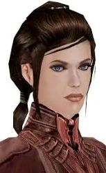
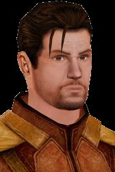
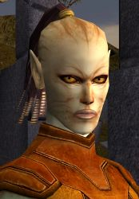
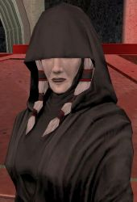
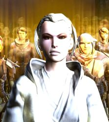
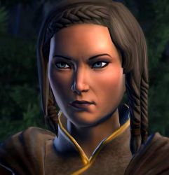

Relationships
Bastila ShanCarth Onasi
Juhani
Alek/Darth Malak
Kreia/Darth Traya
Meetra Surik
Ebon Hawk Crew
Descendants
Bastila Shan
One of Revan's love interests while playing as a man in KOTOR, Bastila is a confident and prodigious young jedi knight. The two characters share a strong force bond with eachother as a result of Bastila saving Revan's life, resulting in them being able to share dreams and visions among eachother. Later, the Revan novel and SWTOR later confirmed that Bastila and Revan was the cannonical pairing, and that the two of them started a family together.
Carth Onasi
Another possible relationship, although this time only romancable while playing as a woman, Carth is a confident, loyal, yet paranoid Republic war veteran.
Juhani
The first queer star wars characters, Juhani is a lesbian cathar, and one of Revan's love interests while playing as a woman in KOTOR. She escaped her home planet after it was attacked by Mandalorians, and moved to Taris, where she lived in inhumane conditions. She later became a jedi, where she strugged with embracing peace, resulting in her temporarily falling to the dark side of the force. Despite this, Revan brought her back to the light, resulting in her following Revan in order to prove herself.

Alek 'Squint' Squinquargesimus / Darth Malak
After his homeworld was attacked by Mandalorians, Alek was brought to become a jedi. There, he met Revan, and became one of Revan's most devote followers. He was Revan's preferred second in command throughout the Mandalorian Wars, and was the only person to accompany Revan throughout his trip in the unknown regions of space. Despite Revan cutting of Alek's jaw during their time as a sith, Revan believed for Alek to still be relatively trustworthy. This allowed for Alek's betrayal to be successful.
Kreia / Darth Traya
Jedi Consular Kreia, eventually Darth Traya, was one of Revan's jedi master. Little is known of Kreia's time in the order or her relationship with Revan, aside from her exile from the order as a result of her investigation into the Darkside. Falling to the darkside as a result of the destruction of Malachor V, she became a sith lord. During her time as a sith, she taught two sith apprentices: Darth Nihilus and Darth Sion. As sith tend to do, they betrayed her and began to attack the Jedi. She watched as the two groups destroyed eachother, leading for her to believe that neither of them deserved to exist because of how they both stifled individualism. Eventually, she concedes her position after being defeated by the Jedi Exile, telling them where Revan was captured.
Meetra Surik / Jedi Exile
Meetra Surik, better known as the Jedi Exile, was a jedi knight. She was one of the many jedi who followed Revan, and gained a position as one of his generals. Surik greatly respected Revan, who trusted her in return. This trust resulted in her being responsible for the destruction of Malachor V. After the destruction of Malachor V, she lost her connection to the force, as a result of the strong force connections she formed creating backlash. Afterwords, she returned to the jedi temple to face judgement. There, she was kicked from the order, her lightsaber was taken by the council, and she was exiled to the outer rim. She roamed there until the Jedi Purge, in which she returned in order to face Darth Sion and Darth Nihilus. After defeating all of Kreia's sith lords, including Kreia herself, she traveled to the unknown regions in search of Revan. She eventually found him, captured in the hands Darth Nyriss of the dark council. She, along with the Sith Lord Scourge, busted Revan out of prison and confronted the Emperor. Their attempt was unsuccessful, with Revan being captured, Meetra killed, and Scourge being converted to the Emperor's side. Despite her death, she returned as a force ghost in order to support Revan throughout his imprisonment.
Crew of the Ebon Hawk

Mention full crew, positive relationship (mostly) even canderous considering how quickly he dropped everything to go mask hunting and he was waiting
Descendants
Son named Vaner(?) married ?? in book with like two grandchildren. Line kept going until Satele Shan f Jace Malcolm and had dude whos name started with T